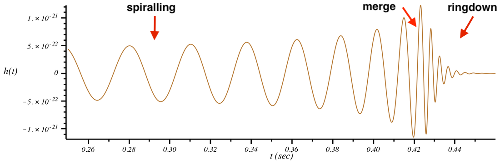
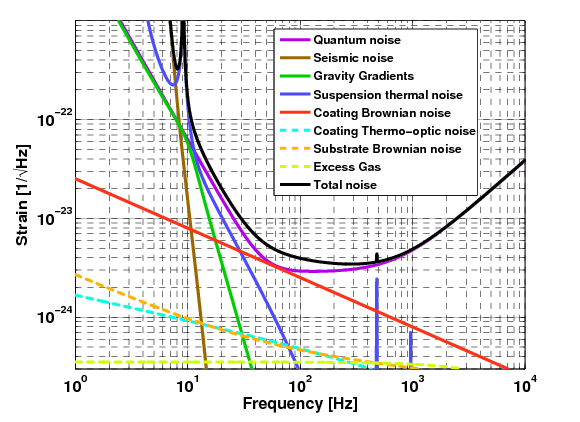
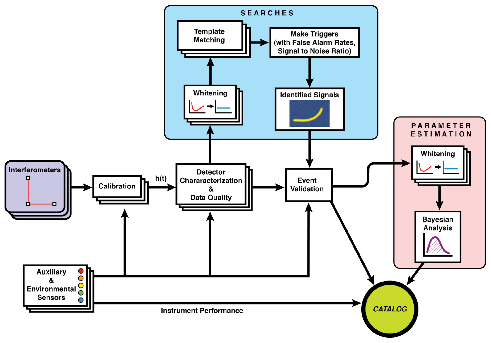

Chapter 2
引力波信号与噪声建模
引力波数据分析的所有方法——无论是传统的匹配滤波、贝叶斯推断，还是本书后续各章介绍的深度学习、模拟推断——都建立在对信号和噪声的数学描述之上。理解这些描述的物理基础，是理解后续方法选择的前提。本章系统介绍引力波信号的波形模型、源类型的多模态特征、探测器噪声的统计性质，以及数据预处理的标准流程。
2.1 引力波的基本理论与波形模型
在线性化广义相对论的弱场慢速近似下，引力波表现为时空度规的横波扰动 [34]。在横-无迹（TT）规范中，度规扰动为
其中 \(h_{ij}^{\mathrm {TT}}\) 为引力波应变张量，其两个独立分量（\(+\) 极化和 \(\times \) 极化）描述了时空在垂直于传播方向平面内的伸缩和剪切。
2.1.1 线性化广义相对论与引力波方程
引力波的理论基础来自爱因斯坦广义相对论的线性化近似。爱因斯坦场方程的完整形式为
其中 \(G_{\mu \nu }\) 为爱因斯坦张量，\(T_{\mu \nu }\) 为能量-动量张量。在弱场近似下，将时空度规写为闵可夫斯基度规加上小扰动：\(g_{\mu \nu } = \eta _{\mu \nu } + h_{\mu \nu }\)，其中 \(|h_{\mu \nu }| \ll 1\)。将此代入爱因斯坦方程并保留 \(h_{\mu \nu }\) 的一阶项，得到线性化的场方程。
为简化方程，引入迹反转度规扰动 \(\bar {h}_{\mu \nu } = h_{\mu \nu } - \frac {1}{2}\eta _{\mu \nu }h\)（其中 \(h = \eta ^{\mu \nu }h_{\mu \nu }\) 为迹），并选取洛伦兹规范（Lorenz gauge）\(\partial ^\mu \bar {h}_{\mu \nu } = 0\)，线性化场方程化为简洁的波动方程：
其中 \(\Box = -\partial _t^2/c^2 + \nabla ^2\) 为达朗贝尔算符。在真空中（\(T_{\mu \nu } = 0\)），此方程化为标准的波动方程 \(\Box \bar {h}_{\mu \nu } = 0\)，其解为以光速传播的横波——引力波。
在横-无迹（TT）规范中，通过进一步的规范选择，可以将引力波的独立自由度减少到最少。TT 规范要求 \(h_{0\mu }^{TT} = 0\)（时间分量为零）、\(\partial ^j h_{ij}^{TT} = 0\)（横向条件）、\(h_{ii}^{TT} = 0\)（无迹条件）。在这一规范下，对于沿 \(z\) 轴传播的引力波，度规扰动只有两个独立分量：
其中 \(h_+\) 和 \(h_\times \) 分别为两种极化模式的振幅。\(h_+\) 极化描述沿 \(x\)-\(y\) 轴方向的时空拉伸-压缩：当 \(h_+ > 0\) 时，\(x\) 方向拉伸、\(y\) 方向压缩；当 \(h_+ < 0\) 时反之。\(h_\times \) 极化描述沿 \(45°\) 方向的时空剪切。一个环形排列的自由质点在 \(h_+\) 极化的引力波通过时，会交替地变形为沿 \(x\) 方向拉长的椭圆和沿 \(y\) 方向拉长的椭圆，形成特征性的“呼吸”运动。
2.1.2 四极辐射公式与轨道衰减
引力波的辐射功率由质量四极矩张量的时间导数决定。对于缓慢运动（\(v \ll c\)）的引力波源，辐射功率由四极公式给出：
其中 \(Q_{ij} = \int \rho (x_i x_j - \frac {1}{3}\delta _{ij}r^2)\,d^3x\) 为质量四极矩张量的无迹部分，上方三点表示对时间的三阶导数，尖括号表示对轨道周期的时间平均。这一公式揭示了引力波辐射的基本物理：只有质量分布的四极矩随时间变化才能辐射引力波，球对称或轴对称的运动（如球对称坍缩、均匀自转）不产生引力波辐射。
对于圆轨道双星系统，质量分别为 \(m_1\) 和 \(m_2\)，轨道半径为 \(r\)，四极辐射功率为：
这一功率来自轨道动能和引力势能的损失，导致轨道半径随时间减小（轨道衰减）。轨道衰减的速率为：
从初始轨道半径 \(r_0\) 到并合（\(r \to 0\)）的时间尺度为 \(\tau \propto r_0^4\)。对于 Hulse-Taylor 脉冲双星 PSR B1913+16，轨道周期约7.75小时，轨道偏心率约0.617，理论预言的轨道周期衰减速率约为每年76微秒，与观测值的符合精度优于0.3%，是引力波存在的最精确间接证据。
2.1.3 后牛顿展开与引力波相位
在旋进阶段，引力波波形的精确计算依赖后牛顿（post-Newtonian，PN）展开，即以 \(v/c\)（轨道速度与光速之比）为小参数的系统展开 [35]。后牛顿展开的精度通常以 PN 阶数表示：\(n\)PN 阶对应 \((v/c)^{2n}\) 量级的修正。目前引力波数据分析中使用的波形模型通常精确到 3.5PN 阶（即 \((v/c)^7\) 量级），包含了质量比、对称质量比、自旋-轨道耦合、自旋-自旋耦合等多种修正项。
引力波相位的后牛顿展开在频域中具有特别简洁的形式。在驻相近似（SPA）下，频域波形的相位为：
其中 \(t_c\) 为并合时刻，\(\phi _c\) 为并合相位，\(\mathcal {M}\) 为啁啾质量，\(M = m_1 + m_2\) 为总质量，\(\psi _k\) 为各阶后牛顿系数（依赖于质量比和自旋参数）。每个 \(\psi _k\) 系数的精确值与引力理论相关，是检验广义相对论的探针：如果广义相对论在强场条件下存在偏差，这些系数将偏离广义相对论的预言值，从而在引力波相位中留下可测量的印记。
后牛顿展开的一个重要结论是啁啾质量 \(\mathcal {M}\) 的主导地位：在最低阶（0PN）近似下，引力波频率演化完全由 \(\mathcal {M}\) 决定，而与质量比无关。这意味着 \(\mathcal {M}\) 是引力波信号中测量最精确的参数，其测量精度通常比单个天体质量高一到两个量级。对于 GW150914，\(\mathcal {M} \approx 28.3\,M_\odot \) 的测量精度约为 \(\pm 1.5\,M_\odot \)（约5%），而单个黑洞质量的测量精度约为 \(\pm 4\,M_\odot \)（约12%）。
探测器测量的应变为
其中 \(F_+\)、\(F_\times \) 为天线响应函数，取决于源的天空位置 \((\alpha , \delta )\) 和极化角 \(\psi \)。
对于致密双星系统（双黑洞、双中子星），引力波波形由三个阶段组成：旋近阶段（inspiral）——两个天体在引力波辐射能量损失的驱动下螺旋靠近，频率单调增加，形成特征性的“啁啾”信号；并合阶段（merger）——两体系统的非线性动力学，需要数值相对论计算；衰荡阶段（ringdown）——并合后残余黑洞通过准简正模振荡辐射剩余能量，最终趋于稳态。

实际应用中广泛使用的是现象学波形模型（IMRPhenomX 系列）和有效单体波形模型（EOBNR 系列），它们通过将后牛顿解析计算与数值相对论校准相结合，高效覆盖参数空间，构成匹配滤波模板库和贝叶斯参数估计的核心工具 [36]。
2.2 引力波源类型与多模态信号特征
不同类型的引力波源在频率、持续时间、信号形态上存在显著差异，构成了信号空间的多模态结构。
地面探测器频段（约 10 Hz–数千 Hz）主要源类型包括：
- 双黑洞并合（BBH）：最常见的观测事件类型，持续时间从数秒（高质量系统）到数分钟（低质量系统），信噪比通常较高。
- 双中子星并合（BNS）：持续时间更长（数分钟至数十分钟），并合后可能产生超新星和短伽马射线暴，是多信使天文学的核心目标。
- 黑洞-中子星并合（NSBH）：介于两者之间，若中子星被撕碎可能产生明显的电磁对应体。
空间探测器覆盖的毫赫兹频段的信号种类更为丰富：大质量双黑洞（\(10^5\)–\(10^8\,M_\odot \)）、极端质量比旋入（EMRI）、银河系双白矮星（数百万个同时叠加）、以及随机引力波背景。这种多源叠加的复杂性是空间引力波数据分析的核心挑战之一。
2.2.1 双黑洞并合系统
双黑洞并合（BBH）是迄今为止引力波探测中最常见的事件类型，GWTC-3 目录 [6]中约90%的事件为 BBH。BBH 的质量范围跨越多个量级：恒星级 BBH 的单个黑洞质量通常在 \(5\,M_\odot \) 至 \(100\,M_\odot \) 之间，总质量在 \(10\,M_\odot \) 至 \(200\,M_\odot \) 之间；中间质量 BBH（IMBHB）的质量在 \(100\,M_\odot \) 至 \(10^4\,M_\odot \) 之间，目前仅有少数候选体（如 GW190521，总质量约 \(150\,M_\odot \)，其主要成分约 \(85\,M_\odot \) 落入对不稳定质量间隙）；大质量双黑洞（MBHB）的质量在 \(10^4\,M_\odot \) 至 \(10^9\,M_\odot \) 之间，是空间探测器（LISA/太极）的主要目标。
BBH 的形成机制是当前天体物理学的重要研究课题，主要有两类机制：孤立双星演化（isolated binary evolution）和动力学俘获（dynamical capture）。孤立双星演化机制认为，BBH 来自大质量双星系统的演化：两颗大质量恒星经历公共包层演化（common envelope evolution），轨道收缩，最终各自坍缩为黑洞，形成紧密的 BBH 系统。这一机制预言 BBH 的自旋通常与轨道角动量对齐（有效自旋参数 \(\chi _\text {eff} > 0\)），且质量比接近1（两个黑洞质量相近）。动力学俘获机制认为，BBH 在致密星团（球状星团、核星团）中通过引力散射形成：两个孤立黑洞在多体相互作用中被俘获为束缚系统。这一机制预言 BBH 的自旋方向随机（\(\chi _\text {eff}\) 分布对称于零），且质量比分布更宽。
GWTC-3 的统计分析表明，观测到的 BBH 质量分布具有复杂结构，无法用单一的幂律分布描述：在约 \(10\,M_\odot \) 处存在一个质量峰，在约 \(35\,M_\odot \) 处存在另一个峰，在约 \(3\,M_\odot \) 至 \(5\,M_\odot \) 的“质量间隙”中存在若干候选体，在约 \(50\,M_\odot \) 至 \(130\,M_\odot \) 的“对不稳定质量间隙”中也有候选体（如 GW190521 的主要成分约 \(85\,M_\odot \)）。这些特征对黑洞形成机制提出了重要约束，也是引力波天文学与恒星演化理论交叉研究的核心问题。
2.2.2 双中子星并合与多信使天文学
双中子星并合（BNS）是引力波天文学中科学价值最丰富的事件类型之一。中子星的质量范围约为 \(1.1\,M_\odot \) 至 \(2.3\,M_\odot \)，由核物质状态方程决定的最大质量约为 \(2\,M_\odot \) 至 \(3\,M_\odot \)（具体值取决于状态方程）。BNS 的引力波信号持续时间远长于 BBH：对于典型的 \(1.4+1.4\,M_\odot \) 系统，从进入 LIGO 灵敏频段（约10 Hz）到并合约需数分钟，在 Advanced LIGO 的灵敏频段内积累约 \(10^4\) 个轨道周期，信号的相位演化携带了极为丰富的物理信息。
GW170817 是迄今唯一具有明确电磁对应体的引力波事件 [7]，其科学价值难以估量。该事件的引力波信号于2017年8月17日被 LIGO-Virgo 网络探测到，啁啾质量约为 \(1.188\,M_\odot \)，对应两颗中子星的质量约为 \(1.17\,M_\odot \) 和 \(1.60\,M_\odot \)（在低自旋先验下），光度距离约为 \(40^{+8}_{-14}\) Mpc，宿主星系为 NGC 4993。引力波信号结束约1.7秒后，Fermi 和 INTEGRAL 卫星探测到短伽马射线暴 GRB 170817A，强有力地支持了双中子星并合与一类短伽马射线暴之间的物理联系。此后数天至数周内，数十台光学、近红外、X射线、射电望远镜对 NGC 4993 进行了密集观测，发现了千新星（kilonova）AT2017gfo——这是重元素（如金、铂、铀）通过 r 过程核合成的重要观测证据，极大推进了宇宙重元素起源问题的研究。
BNS 并合后的产物是另一个重要的科学问题。根据并合前两颗中子星的总质量与最大中子星质量的关系，并合后可能形成：超大质量中子星（hypermassive neutron star，HMNS，寿命约数毫秒，最终坍缩为黑洞）、超稳定中子星（supramassive neutron star，寿命约数秒至数分钟或更长）、或直接坍缩为黑洞。GW170817 的后续电磁观测普遍支持其残余体在较短时间内坍缩为黑洞，但具体坍缩时刻和机制仍存在模型依赖与争议。未来的高频引力波探测（\(\gtrsim 1\) kHz）将有望直接探测并合后残余体的振荡，为中子星状态方程提供更直接的约束。
2.2.3 极端质量比旋入系统
极端质量比旋入（EMRI）是空间引力波探测器最重要的科学目标之一，也是引力波数据分析中最具挑战性的问题。EMRI 系统由一个超大质量黑洞（质量 \(M \sim 10^4\)–\(10^7\,M_\odot \)）和一个轨道星体（质量 \(\mu \sim 1\)–\(100\,M_\odot \)，通常为中子星、白矮星或恒星级黑洞）组成，质量比 \(q = \mu /M \sim 10^{-4}\)–\(10^{-7}\)。
EMRI 的引力波信号具有极为丰富的物理内容。由于质量比极小，轨道星体对中心黑洞的反作用可以忽略，其轨道运动精确地追踪 Kerr 时空的测地线。在 LISA/太极的灵敏频段内，一个典型的 EMRI 事件在并合前约一年内会经历约 \(10^5\) 个轨道周期，每次绕转产生的引力波相位变化与 Kerr 时空的几何精密相关。这意味着 EMRI 信号是对中心黑洞时空几何的极精密测绘：通过精确测量 EMRI 的引力波相位演化，可以以前所未有的精度测量中心黑洞的质量和自旋，检验“黑洞无毛定理”（即 Kerr 度规完全由质量和自旋描述），以及探测中心黑洞周围可能存在的暗物质晕或其他物质分布。
EMRI 信号的数据分析极为困难。首先，信号持续时间长（约一年），在频域中形成极为密集的谱线结构，与其他信号高度重叠。其次，EMRI 的参数空间约17维（中心黑洞质量和自旋、轨道星体质量、轨道偏心率、轨道倾角、初始相位等），且参数之间存在强简并。第三，高保真 EMRI 波形需要描述 Kerr 时空中的相对论轨道演化、引力辐射反作用和多谐波结构，计算代价远高于常规双黑洞波形。这些困难使得直接模板库搜索和常规逐点采样在 EMRI 问题中面临严峻压力，也使机器学习方法（特别是模拟推断）成为空间引力波数据分析中的重要候选路线。
2.2.4 随机引力波背景
随机引力波背景（SGWB）是由大量不可分辨的引力波源叠加形成的弥漫性背景辐射，类似于宇宙微波背景辐射（CMB）在引力波领域的对应物。SGWB 的来源可分为天体物理起源和宇宙学起源两大类。
天体物理起源的 SGWB 主要来自宇宙历史上所有双致密星并合事件的叠加。在地面探测器（LIGO/Virgo/KAGRA）频段，BBH 并合产生的背景能量密度约为 \(\Omega _{GW} \sim 10^{-9}\)（以临界密度为单位），目前尚未被探测到，但在 O4/O5 期间有望达到探测阈值。在 LISA 频段，银河系内不可分辨的双白矮星形成的混叠背景（confusion noise）是数据分析的主要挑战之一，其能量密度约为 \(\Omega _{GW} \sim 10^{-11}\)–\(10^{-10}\)，在 \(1\)–\(10\) mHz 频段显著高于仪器噪声。
宇宙学起源的 SGWB 携带了宇宙早期历史的信息，是引力波宇宙学的核心目标。一阶宇宙相变（如电弱相变或 QCD 相变）产生的 SGWB 来自相变泡泡的碰撞和磁流体动力学湍流，其特征频率和能量密度取决于相变温度和强度，在 LISA 频段可能产生可探测的信号。宇宙弦（cosmic strings）产生的 SGWB 来自宇宙弦环的振荡和湮灭，其功率谱具有特征性的平坦形状，在宽频段内均有贡献。原初引力波（primordial gravitational waves）是宇宙暴胀期间产生的张量扰动，其功率谱由张量-标量比 \(r\) 描述，目前的 CMB 观测给出 \(r < 0.06\)，对应的 SGWB 能量密度约为 \(\Omega _{GW} \sim 10^{-16}\)，远低于当前和近期探测器的灵敏度，但未来的空间探测器（如 BBO 或 DECIGO）有望探测到。
SGWB 的探测方法。SGWB 的探测面临独特的方法论挑战：背景信号本身是随机的，无法通过单次观测确认，必须通过统计方法从噪声中提取。标准方法是跨探测器互相关（cross-correlation）：对于两台探测器 \(i\) 和 \(j\)，互相关统计量为
其中 \(T\) 为观测时间，\(\tilde {d}\) 为频域数据。在高斯噪声假设下，\(\hat {C}_{ij}\) 的期望值正比于 SGWB 的能量密度谱 \(\Omega _{GW}(f)\)，而噪声贡献在两台独立探测器之间不相关，因此通过长时间积分可以将信噪比提升至 \(\text {SNR} \propto \sqrt {T}\)。对于 LIGO 双探测器网络，探测 \(\Omega _{GW} \sim 10^{-9}\) 的背景需要约一年的观测时间。
AI 方法在 SGWB 分析中的应用。传统互相关方法假设 SGWB 是各向同性的，但实际的天体物理背景（如 BBH 并合背景）可能具有各向异性，反映了宇宙大尺度结构的分布。深度学习方法可以通过学习背景信号的统计特征，在不假设各向同性的前提下提取 SGWB 的方向信息，这是传统方法难以实现的。此外，SBI 方法可以直接对 SGWB 的物理参数（如相变温度、宇宙弦张力）进行贝叶斯推断，绕过传统方法中对似然函数解析形式的依赖，为宇宙学参数约束提供更灵活的推断框架。
脉冲星计时阵列（PTA）的纳赫兹背景。2023年，多个脉冲星计时阵列（PTA）合作组——包括北美纳赫兹引力波天文台（NANOGrav）、欧洲脉冲星计时阵列（EPTA）、印度脉冲星计时阵列（InPTA）和帕克斯脉冲星计时阵列（PPTA）——相继报告了纳赫兹频段随机引力波背景的候选信号，其能量密度约为 \(\Omega _{GW} \sim 10^{-9}\)，频率约为 \(10^{-9}\)–\(10^{-7}\) Hz。这一信号的物理起源尚不确定，候选解释包括超大质量双黑洞并合背景、宇宙弦网络、以及早期宇宙相变。PTA 的发现与 LISA/太极的毫赫兹频段观测形成互补，共同构成了多频段引力波宇宙学的观测基础。AI 方法在 PTA 数据分析中同样发挥着重要作用：机器学习方法被用于脉冲星计时残差的噪声建模、信号与噪声的分离，以及宇宙学参数的贝叶斯推断。
2.2.5 银河系双星与混叠噪声
银河系内存在约 \(10^7\)–\(10^8\) 个双白矮星系统，其中大约 \(10^4\) 个在 LISA/太极的灵敏频段（\(1\)–\(10\) mHz）内可分辨，其余形成无法单独区分的“混叠噪声”背景。这一背景在低频段（\(f \lesssim 3\) mHz）的能量密度高于仪器噪声，是空间引力波探测器数据分析的主要干扰源之一。
混叠噪声的统计特性与仪器噪声不同：它具有已知的频谱形状（由银河系双星种群的统计分布决定），且在银道面方向具有各向异性。这些特性使得混叠噪声既是科学目标（通过统计分析可以约束银河系双星种群的演化历史），也是数据分析的挑战（需要与仪器噪声和其他信号源同时建模）。
全局拟合框架（第10章）的核心任务之一，就是同时估计混叠噪声的统计参数和可分辨双星的物理参数，这要求在 \(10^4\) 维以上的参数空间中进行联合贝叶斯推断。AI 方法——特别是 SBI 和快速参数估计方法——是使这一任务在计算上可行的关键技术支撑。
2.3 探测器噪声性质
探测器输出 \(d(t) = h(t) + n(t)\) 中，噪声 \(n(t)\) 的统计性质对数据分析方法的选择有决定性影响 [37]。
功率谱密度（PSD）是描述噪声频率特性的核心量：
其中 \(S_n(f)\) 为单边功率谱密度。在高斯平稳噪声假设下，\(S_n(f)\) 完全描述了噪声的统计特性，匹配滤波在此假设下达到理论最优信噪比。
然而，真实探测器噪声远比高斯平稳假设复杂：
非高斯成分：探测器噪声中包含大量来自环境和仪器的暂态噪声（glitch），其幅度可比背景噪声高数个量级，持续时间从毫秒到数秒不等 [38]。glitch 的形态多样（“blip”、“koi fish”、“scattered light”等），统计上不满足高斯分布，是引力波搜索中误报率的主要来源。
非平稳性：探测器灵敏度随时间缓慢变化（“漂移”），在特定时段也会出现突发性的灵敏度下降 [39]。这要求数据分析算法能够实时估计和追踪噪声功率谱，而非使用固定的噪声模型。
频谱线：地面振动、电源频率（50/60 Hz 及其谐波）、悬挂系统共振等产生的窄带频谱线，在功率谱中形成锐峰，需要专门处理 [40]。

量子散粒噪声（quantum shot noise）是地面引力波探测器高频灵敏度的根本限制，来源于光子计数的量子统计涨落。在相干态激光照射下，光子到达探测器的时间服从泊松分布，单位时间内的光子数涨落为 \(\Delta N \sim \sqrt {N}\)，对应的相位测量不确定度为 \(\Delta \phi \sim 1/\sqrt {N}\)。对于功率为 \(P\) 的激光，单位时间内的光子数为 \(N = P/(\hbar \omega )\)，因此散粒噪声引起的应变噪声谱密度为：
其中 \(P_{circ}\) 为臂腔内的循环光功率，\(L\) 为臂长。这解释了为何 Advanced LIGO 要将臂腔功率提升至约750 kW——功率越高，散粒噪声越低。
与散粒噪声相对的是辐射压力噪声（radiation pressure noise）：高功率激光的光子动量涨落对镜面施加随机力，产生镜面位移噪声，其谱密度为：
其中 \(M\) 为镜面质量。散粒噪声随功率增加而减小，辐射压力噪声随功率增加而增大，两者之积受海森堡不确定性原理约束，存在一个最优功率使总量子噪声最小——这就是标准量子极限（SQL）。在 SQL 处，散粒噪声与辐射压力噪声相等，总量子噪声为：
突破 SQL 需要使用量子压缩光（squeezed light）技术：通过注入频率压缩态的真空场，可以在牺牲一个正交分量的不确定度的同时，降低另一个正交分量（相位或振幅）的不确定度，从而在特定频段将量子噪声降低至 SQL 以下。Advanced LIGO 在 O3 期间已成功实现约3 dB 的量子压缩，将高频灵敏度提升约40%。
量子压缩光的物理机制需要更细致的说明。散粒噪声与辐射压力噪声在本质上来源于同一光场的量子涨落，两者的谱密度乘积受海森堡不确定性关系约束：\(S_{shot}(f) \cdot S_{rp}(f) \geq \hbar ^2/M^2L^2\)，其几何均值即为标准量子极限处的总量子噪声。注入频率相关的压缩真空（frequency-dependent squeezed vacuum）可以对不同频率实现不同方向的压缩：在高频段（散粒噪声主导）压缩相位分量，在低频段（辐射压力噪声主导）压缩振幅分量。频率相关压缩需要一个滤波腔（filter cavity）来实现频率依赖的旋转角，Advanced LIGO 在 O4 运行中引入了长约300米的滤波腔，实现了频率相关压缩，在全频段量子噪声均低于 SQL。
在数据分析的视角下，量子噪声的优化与AI方法存在一个有趣的协同效应。量子压缩光降低散粒噪声的同时提升了高频灵敏度，这对高质量双黑洞并合（并合阶段频率\(>100\) Hz）和双中子星合并（GW频率可达几kHz）的探测尤为重要。灵敏度提升后，在相同观测时间内可以探测到更远距离的事件，使引力波天文学的有效体积扩大，探测率相应提升。对数据分析算法而言，更高灵敏度意味着事件的平均信噪比更高，参数估计的精度更好；同时也意味着非高斯噪声（glitch）在高信噪比区域的相对贡献更大（因为真实信号变得更明显，而glitch的幅度分布不随探测器升级而改变）。这种“信号增强、glitch相对显眼”的效应，对机器学习方法的训练策略有直接影响：随着探测器升级，训练数据中的信噪比分布应相应调整，对高信噪比事件的训练权重可适当降低，同时加强对低信噪比但物理参数极端（如高质量比、高自旋）的事件的训练覆盖。这种“训练数据与探测器灵敏度协同演化”的策略，是AI方法在引力波领域持续保持高性能的关键工程实践。
从信息论角度理解量子极限：引力波探测本质上是测量两个检验质量之间的相对位移，这一测量行为不可避免地对被测系统施加反作用（辐射压力），这正是量子测量的反作用噪声。在标准量子力学框架下，任何不打破海森堡不确定性关系的测量方案都不能同时将位移分辨率和反作用力降至 SQL 以下。但通过“量子背作用规避”（quantum back-action evasion）技术——例如速度计方案（speed-meter）或变形探测器方案（variational readout）——可以在原理上规避辐射压力的反作用效应，从而使灵敏度突破 SQL。这类方案目前正在原型探测器上验证，未来的爱因斯坦望远镜（ET）和宇宙探测者（CE）计划引入这些技术，以期在全频段超越 SQL。
从实践角度，O3期间Advanced LIGO实现的约3 dB量子噪声降低，对应信噪比提升约\(\sqrt {2}\)倍，即灵敏度提升约40%。这一提升意味着探测器对引力波事件的探测距离增加约26%，对应探测体积增加约71%（体积正比于距离的三次方）。从O2到O3期间，量子压缩的应用是引力波事件率从约10个/观测期增至约40个/观测期的重要技术因素之一，体现了量子光学技术在引力波天文学中的直接科学价值。
2.3.1 热噪声与低温技术
热噪声是地面引力波探测器中频段（约10至200 Hz）灵敏度的主要限制，来源于探测器各机械部件的热涨落。根据涨落-耗散定理，处于温度 \(T\) 的机械系统的位移噪声谱密度为：
其中 \(\chi (\omega )\) 为系统的机械导纳（susceptibility），\(\text {Im}[\chi (\omega )]\) 正比于机械损耗。这一公式揭示了降低热噪声的两条路径：降低温度 \(T\)，或降低机械损耗（提高机械品质因子 \(Q\)）。
Advanced LIGO 采用熔融石英（fused silica）纤维悬挂镜面，熔融石英在室温下的机械品质因子约为 \(10^7\)，是目前已知机械损耗最低的材料之一。镜面涂层（高反射率介质膜）的机械损耗是热噪声的主要来源，其品质因子约为 \(10^4\)，比基底低三个量级，是当前热噪声研究的核心问题。
KAGRA 采用了低温（约20 K）蓝宝石镜面，利用低温下材料机械损耗的显著降低来减小热噪声。蓝宝石在20 K 时的机械品质因子约为 \(10^8\)，比室温高约一个量级，理论上可将热噪声降低约3倍。低温技术的挑战在于：需要将约40公斤的镜面冷却至20 K，同时保持极低的振动水平，这需要专门设计的低温悬挂系统和辐射冷却方案。爱因斯坦望远镜（ET）计划采用约10 K 的硅镜面，将热噪声进一步降低约一个量级，使中频段灵敏度达到 \(10^{-25}/\sqrt {\text {Hz}}\) 量级。
2.3.2 重力梯度噪声与地下探测器
重力梯度噪声（Newtonian noise，NN）是地面引力波探测器低频灵敏度的根本性限制，其物理机制与其他噪声源有本质区别：它不是通过机械耦合传递到检验质量，而是通过引力直接作用于检验质量，因此无法通过任何机械隔振手段消除。
重力梯度噪声的来源包括：地震波（P 波和 S 波）引起的地面密度涨落，在检验质量周围产生随时间变化的引力梯度；大气压力波（声波和重力波）引起的大气密度涨落，同样产生引力梯度；以及人类活动（车辆、机械振动）引起的局部密度涨落。在地面探测器的典型运行环境中，重力梯度噪声在约1至10 Hz 频段的贡献约为 \(10^{-20}\)–\(10^{-19}\,\text {m}/\sqrt {\text {Hz}}\)，远高于 Advanced LIGO 的设计灵敏度，是地面探测器低频截止（约10 Hz）的根本原因。
减小重力梯度噪声的主要方法有两种。第一种是在线减除（online subtraction）：在检验质量周围布置密集的地震传感器和气压传感器网络，实时测量引力梯度的涨落，然后从数据中减去其对检验质量位移的贡献。这一方法在理论上可将重力梯度噪声降低约一个量级，但实际效果受限于传感器的覆盖密度和测量精度。第二种是地下建设：将探测器建于地下数百米深处，利用岩层对地震波的天然衰减（约每100米衰减一个量级）来降低地震噪声，从而间接降低重力梯度噪声。爱因斯坦望远镜（ET）和 KAGRA 均采用了地下建设方案，ET 的设计深度约为100至200米，预计可将重力梯度噪声降低约两个量级，使低频截止降至约2至3 Hz。
2.4 信号与噪声的数学建模方法
引力波数据分析的标准内积定义为 [41]
这一定义使得在高斯平稳噪声下，\(\langle n, n\rangle \) 服从 \(\chi ^2\) 分布，为统计检验提供了理论基础。
信号的最优信噪比（SNR）定义为
它决定了特定信号在给定噪声背景下能够被探测到的理论极限。
在引力波参数估计中，贝叶斯似然函数的标准形式为 [42, 43]
这一表达式的计算需要对每个参数点 \(\theta \) 生成波形 \(h(\theta )\)，是贝叶斯推断计算代价的主要来源。
2.4.1 Fisher 信息矩阵与参数估计精度
Fisher 信息矩阵（Fisher information matrix）是分析引力波参数估计精度的重要理论工具 [41]，它给出了在高信噪比极限下参数估计误差的理论下界（Cramér-Rao 界）。Fisher 矩阵定义为：
其中 \(\partial _i = \partial /\partial \theta _i\) 为对第 \(i\) 个参数的偏导数。Cramér-Rao 界给出参数估计误差的下界：
即参数 \(\theta _i\) 的测量误差不能小于 Fisher 矩阵逆矩阵的对角元的平方根。在高信噪比极限下，贝叶斯后验分布趋近于以真实参数值为中心、协方差矩阵为 \(\Gamma ^{-1}\) 的多维高斯分布，Fisher 矩阵分析给出的精度估计与完整贝叶斯分析的结果一致。
Fisher 矩阵分析在引力波数据分析中有多方面的应用。首先，它揭示了哪些参数在高信噪比极限下最精确可测：对于双黑洞系统，啁啾质量 \(\mathcal {M}\) 的 Fisher 矩阵元最大，对应最小的测量误差；而质量比 \(q\) 和自旋参数的 Fisher 矩阵元较小，对应较大的测量误差。其次，Fisher 矩阵的非对角元揭示了参数之间的相关性（简并）：例如，距离 \(d_L\) 和轨道倾角 \(\iota \) 之间存在强简并（两者都影响信号振幅），导致单独测量这两个参数的精度远低于联合约束的精度。第三，Fisher 矩阵是匹配滤波模板库设计的理论基础：模板库的密度（即相邻模板之间的参数间距）由 Fisher 矩阵决定，确保任意真实信号与最近模板之间的匹配度不低于设计阈值。
需要注意的是，Fisher 矩阵分析在低信噪比条件下可能给出不准确的结果，因为贝叶斯后验分布在低信噪比时可能显著偏离高斯形状（出现多峰、长尾等非高斯特征）。对于实际的引力波参数估计，特别是对于信噪比较低的事件或参数空间中存在强简并的情况，需要使用完整的贝叶斯推断方法（如嵌套采样 [44]或 MCMC）来获得可靠的后验分布。标准推断工具 LALInference [42] 和 Bilby [43] 均实现了这些方法。
Fisher 矩阵在引力波参数估计中的具体应用价值可以通过一个典型的双黑洞系统来具体说明。对于总质量约为 \(60\,M_\odot \)、SNR约为20的双黑洞并合事件，Fisher 矩阵分析给出各参数的理论精度估计如下：啁啾质量 \(\mathcal {M}\) 的相对误差约为 \(\Delta \mathcal {M}/\mathcal {M} \approx 0.05\%\)，这对应的物理约束（质量精度约 \(0.03\,M_\odot \)）远超任何其他类型的黑洞质量测量手段；质量比 \(q = m_1/m_2\) 的相对误差约为 \(\Delta q/q \approx 15\%\)，这是因为质量比对波形相位演化的贡献从1.5PN阶才开始显现，而啁啾质量在0PN阶就主导了相位演化，因此 Fisher 矩阵中质量比对应的对角元远小于啁啾质量。
参数间相关性（简并结构）的分析同样是 Fisher 矩阵的重要应用。\(\Gamma \) 矩阵的非对角元素 \(\Gamma _{ij}\) 反映了参数 \(\theta _i\) 和 \(\theta _j\) 之间的信息耦合强度。在双黑洞系统中，以下几对参数表现出显著的相关性：（1）啁啾质量 \(\mathcal {M}\) 与并合时刻 \(t_c\) 之间的负相关（\(\Gamma _{\mathcal {M},t_c} < 0\)），因为较重的系统旋进更快，等效于较晚的“有效并合时刻”；（2）有效自旋参数 \(\chi _{eff} = (m_1\chi _{1z} + m_2\chi _{2z})/(m_1+m_2)\) 与质量比 \(q\) 之间的强正相关，原因在于两者对引力波相位演化的贡献在后牛顿展开中有部分重叠（均在1.5PN阶出现），这一简并被称为“质量-自旋简并”，是精确测量黑洞自旋的根本障碍；（3）光度距离 \(d_L\) 与轨道倾角 \(\iota \) 之间的强相关，两者都通过波形振幅的角度因子 \(F(1+\cos ^2\iota )/2\) 和 \(F\cos \iota \) 影响信号强度，对于单探测器观测，两者几乎完全简并（Fisher 矩阵对应子块接近奇异），多探测器网络可以通过方向图差异部分解除这一简并。
Fisher 矩阵分析揭示的参数简并结构，是理解 SBI 方法为何选择特定网络架构的物理基础。第6章介绍的归一化流方法之所以能够高效建模引力波参数后验，部分原因在于其非线性变换能力可以适应 Fisher 矩阵所揭示的弯曲等值线结构——归一化流的每一层变换对应于对后验流形的逐步展开，最终将复杂的简并后验变换为接近正态的基础分布。
Fisher矩阵分析的另一个重要应用是指导多探测器网络的优化设计。对于\(N\)个探测器组成的网络，联合Fisher矩阵为各探测器Fisher矩阵之和，\(\Gamma ^{net} = \sum _{k=1}^N \Gamma ^{(k)}\)，其逆矩阵给出联合参数估计的精度。通过分析 \(\Gamma ^{net}\) 的特征值和特征向量，可以识别哪些参数方向是“信息充足”的（大特征值，对应精确可测的参数组合），哪些是“信息缺乏”的（小特征值，对应难以约束的参数方向）。对于天空定位参数 \((\alpha , \delta )\)，Fisher矩阵分析表明，三探测器（H1+L1+V1）配置相比双探测器（H1+L1）的天空定位精度提升约5-10倍，因为第三台探测器打破了双探测器配置下天空位置的环状简并。这一结论不仅验证了Virgo探测器在LIGO-Virgo网络中的重要性，也指导了未来全球引力波探测器网络（加入LIGO-India、KAGRA等）的布局优化。在AI参数估计方法的训练中，Fisher矩阵分析可以用于指导训练数据的设计：对于Fisher矩阵揭示的高度简并参数方向，需要在训练集中引入更多样化的样本来覆盖简并流形，而非简单的均匀采样。
白化（whitening）是引力波数据分析中最基本的预处理操作，其数学本质是将有色噪声转化为白噪声，从而简化后续的统计分析。白化操作定义为：
其中 \(S_n(f)/2\) 为双边功率谱密度。白化后的噪声 \(\tilde {n}_w(f)\) 满足 \(\langle \tilde {n}_w(f) \tilde {n}_w^*(f') \rangle = \delta (f-f')\)，即为单位白噪声。
白化操作的重要性在于它建立了频域内积与时域 \(L^2\) 内积之间的等价关系。在白化后的数据中，标准内积退化为简单的频域向量内积：
其中最后一步利用了 Parseval 定理。这一等价性意味着：在白化后的数据上，匹配滤波等价于简单的时域互相关，计算效率大幅提升。
对于深度学习方法，白化是几乎所有方法的必要预处理步骤。未经白化的原始数据在低频段（\(\lesssim 30\) Hz）的噪声功率比高频段高出数个量级，如果直接输入神经网络，网络将被低频噪声主导，无法有效学习引力波信号的特征。白化后，不同频率的噪声贡献归一化，网络可以均等地关注所有频率的信号特征，从而实现更好的学习效果。此外，白化还使得网络的输入分布更接近标准正态分布，有利于梯度下降的收敛。
2.5 数据预处理与特征提取
原始探测器数据在进入分析流程前通常需要经过若干预处理步骤 [39]。
白化（whitening）：将数据除以噪声功率谱的平方根，使不同频率的噪声贡献归一化。白化是几乎所有深度学习方法的必要预处理步骤，确保网络不会被低频噪声主导。
带通滤波：滤除探测器灵敏频段之外的噪声，通常与白化结合使用。
时频变换：Q 变换（Q-transform）和连续小波变换（CWT）将时域数据转换为时频图，直观展示信号的时频演化特征，常用于可视化和深度学习的输入表示。
glitch 处理：对已知类型的 glitch 可以进行减除或标记（gating），以降低其对后续分析的影响。这一步骤在实际数据分析中至关重要，但在方法研究中常被简化处理。
2.5.1 Q 变换与时频分析
Q 变换（Q-transform）是引力波数据分析中最常用的时频分析工具，其数学定义为：
其中 \(w(t, f, Q)\) 为高斯窗函数：
\(Q\) 参数（品质因子）控制时频分辨率的权衡：\(Q\) 值越大，频率分辨率越高但时间分辨率越低；\(Q\) 值越小，时间分辨率越高但频率分辨率越低。这一权衡由海森堡不确定性原理决定：\(\Delta t \cdot \Delta f \geq 1/(4\pi )\)。
Q 变换的优势在于其对数频率轴的自然适应性：引力波信号的频率演化在对数频率轴上更为均匀，Q 变换在对数频率轴上具有恒定的相对频率分辨率 \(\Delta f/f = 1/Q\)，因此能够在宽频段内均匀地捕捉信号特征。在实际应用中，通常选择 \(Q\) 值在5至100之间，并对多个 \(Q\) 值的结果取最大值，以同时保留时间和频率分辨率。
Q 变换在引力波数据分析中有多种应用。在可视化方面，Q 变换时频图是引力波信号最直观的表示方式：BBH 并合的啁啾信号在 Q 变换图上呈现为从低频到高频的弧形轨迹，频率随时间单调增加，振幅在并合时刻达到峰值；glitch 在 Q 变换图上通常呈现为局部的亮斑或条纹，形态与引力波信号有明显差异。在机器学习方面，Q 变换时频图常被用作卷积神经网络（CNN）的输入，利用 CNN 对图像特征的强大提取能力来识别引力波信号和分类 glitch。Gravity Spy 项目就是利用 CNN 对 Q 变换图进行分类，实现了 glitch 的自动化识别和分类，大幅减轻了人工标注的工作量。
2.5.2 数据质量控制与 glitch 处理
数据质量控制（data quality，DQ）是引力波数据分析流水线的重要组成部分，其目标是识别和标记探测器数据中的质量问题，为后续分析提供可靠的数据段。
数据质量控制的第一层是在线监测：在探测器运行期间，数百个辅助通道（auxiliary channels）持续监测探测器的各个子系统（激光功率、镜面位置、环境传感器等）。当某个辅助通道出现异常时，数据质量系统会自动生成一个“数据质量标记”（DQ flag），标记该时段的数据可能受到特定噪声源的污染。这些标记分为不同的类别（Category 1、2、3），对应不同程度的数据质量问题，分析人员可以根据科学目标选择是否排除这些时段。
数据质量控制的第二层是离线分析：在数据采集后，通过时频图的视觉检查和自动化算法来识别 glitch。视觉检查由人工完成，但随着数据量的增加，人工检查已无法满足需求，因此发展了多种自动化方法。Omicron 算法基于 Q 变换，通过在时频图中寻找超过阈值的局部极大值来识别 glitch，并给出每个 glitch 的时间、频率、持续时间和信噪比等参数。Gravity Spy 项目利用卷积神经网络对 Omicron 识别的 glitch 进行分类，将其归入约20种已知类型，并通过主动学习（active learning）循环持续改进分类器的性能。
glitch 的处理方法主要有三种。第一种是门控（gating）：在时域中将包含 glitch 的时段乘以一个平滑的窗函数，将 glitch 的贡献降至零，然后用零填充或插值替代。门控简单有效，但会损失该时段的数据，且可能引入边缘效应。第二种是减除（subtraction）：利用辅助通道的信息，建立 glitch 的物理模型，然后从主通道数据中减去 glitch 的贡献。这一方法可以在不损失数据的情况下降低 glitch 的影响，但需要精确的 glitch 模型，实现难度较高。第三种是统计鲁棒化：在数据分析算法中引入对非高斯噪声的鲁棒性，例如使用重尾分布（如学生 t 分布）替代高斯分布作为噪声模型，或使用基于排名的统计量替代基于均值的统计量。这些方法不需要显式识别和处理 glitch，而是通过算法设计来降低 glitch 对分析结果的影响，是机器学习方法在引力波数据分析中的重要研究方向之一。
这些预处理步骤构成了引力波数据分析管道的第一层，其质量直接影响后续所有方法的性能。本书后续章节介绍的各种 AI 方法，均在预处理后的数据上运行。需要注意的是，真实流水线并非简单的“白化—滤波—分类”线性流程：标定、探测器表征、数据质量审查、搜索触发、事件验证和参数估计之间存在反馈关系，辅助通道和环境传感器也持续参与候选事件的可信度评估。

| 噪声类型 | 主导频段 | 物理机制 | 降低方法 | 典型量级 |
| 量子散粒噪声 | \(\gtrsim 200\) Hz | 光子计数泊松涨落 | 提高激光功率、压缩光 | \(4\times 10^{-24}/\sqrt {\text {Hz}}\) |
| 辐射压力噪声 | \(\lesssim 50\) Hz | 光子动量涨落 | 增大镜面质量 | \(10^{-23}/\sqrt {\text {Hz}}\) |
| 热噪声（镜面） | 20–200 Hz | 布朗运动 | 低温、高Q材料 | \(10^{-23}/\sqrt {\text {Hz}}\) |
| 热噪声（悬挂） | 10–50 Hz | 悬丝热涨落 | 熔融石英纤维 | \(10^{-23}/\sqrt {\text {Hz}}\) |
| 地震噪声 | \(\lesssim 10\) Hz | 地面振动 | 主动隔振系统 | \(10^{-21}/\sqrt {\text {Hz}}\) |
| 重力梯度噪声 | \(\lesssim 10\) Hz | 引力直接耦合 | 地下建设、传感器减除 | \(10^{-21}/\sqrt {\text {Hz}}\) |
| 频谱线 | 离散频率 | 电源、机械共振 | 陷波滤波器 | 局部超出 \(10\times \) |
引力波数据预处理的每一步都有其不可忽视的物理动机，理解这些动机是正确实施预处理的关键。白化操作消除了噪声PSD的频率依赖性，使各频率分量的噪声贡献归一化——这一步骤对于深度学习方法尤为关键，因为神经网络如果直接处理非白化数据，其训练过程将被低频大噪声所主导，导致网络对低频引力波特征不敏感。带通滤波则利用了引力波信号频段的物理先验：引力波信号主要集中在探测器灵敏频段（地面探测器约20-1000 Hz），带通滤波在保留信号的同时去除灵敏频段以外的噪声成分，相当于在预处理层面已经利用了物理知识。Q变换的时频表示为机器学习方法提供了直观且信息丰富的输入格式：引力波的啁啾特征在Q变换时频图上表现为清晰的“上弯曲线”，这种直观特征既便于人工识别，也使CNN能够通过卷积操作高效提取。
从系统工程角度，数据预处理流水线的设计需要在物理严格性和计算效率之间取得平衡。对于在线（实时）引力波搜索，每一步预处理都必须在严格的时间约束下完成——通常要求整个预处理流水线在信号到达后1-2秒内完成，以便后续的触发判断和多信使预警。这一约束限制了预处理步骤的复杂程度：可以使用的噪声PSD估计窗口通常为4-256秒（而非更长时间的精确估计），白化滤波器的时域长度受限，Q变换的参数也需要在精度和速度之间折中。理解这些工程约束，对于在实际引力波数据分析流水线中部署AI方法时做出合理的设计选择，是不可缺少的背景知识。
引力波数据预处理方法本身也在持续发展中。传统的Welch方法（使用历史数据的段平均估计噪声PSD）在噪声平稳时表现良好，但在噪声突变时（如仪器状态改变后）需要一段时间才能重新收敛，导致过渡期内的白化质量下降。基于机器学习的噪声估计方法——如使用LSTM或Transformer追踪噪声PSD的时间演化——可以更快速地适应噪声变化，预计在下一代探测器（Einstein Telescope、Cosmic Explorer）的噪声管理中发挥重要作用。类似地，glitch的实时处理方法也在从“事后减除”向“实时抑制”演进：深度学习去噪方法（第7章）可以在数据产生后毫秒内完成glitch的识别和部分减除，为后续的匹配滤波提供更干净的输入数据。这种“AI预处理+经典分析”的流水线架构，是未来引力波数据分析基础设施的重要发展方向，也是物理-数据融合（第9章）在系统层面的具体体现。
噪声功率谱密度的精确估计对引力波参数估计的精度有直接影响。在贝叶斯参数估计中，引力波似然函数 \(\ln p(d|\theta ) = -\frac {1}{2}\langle d-h(\theta ), d-h(\theta )\rangle \) 中的内积依赖于PSD作为噪声权重；若PSD估计存在偏差，则似然函数值将系统性偏离真实值，导致参数后验分布偏移。这一效应在低信噪比事件（\(\rho < 12\)）中尤为显著，因为PSD估计的相对误差与SNR成反比地影响后验的偏移量。LIGO标准分析流程使用BayesLine算法对每个候选事件进行精细的PSD估计，将PSD不确定度作为额外的贝叶斯自由度纳入参数估计框架，从而减轻PSD估计误差对参数精度的影响。深度学习方法在处理这一问题时具有独特优势：通过在训练数据中引入不同PSD条件的模拟，网络可以隐式地学习对PSD不确定性的鲁棒性，而无需显式地建模PSD不确定度——这是深度学习的“隐式正则化”特性在数据预处理环节的具体体现。
本章系统建立了引力波数据分析的物理与数学基础，为后续各章的方法介绍提供了完整的理论框架。
在引力波基本理论方面，从爱因斯坦场方程的线性化出发，推导了引力波的波动方程和 TT 规范下的极化描述，阐明了四极辐射公式和轨道衰减机制，并系统介绍了后牛顿展开的物理内容和频域 SPA 波形表示。啁啾质量作为引力波信号中测量最精确的参数组合，其主导地位来自后牛顿展开的最低阶项，是匹配滤波和参数估计的核心工具。
在引力波源类型方面，地面探测器对应的高频窗口与 LISA/太极/天琴覆盖的毫赫兹窗口共同构成了多模态信号空间。BBH 的质量分布复杂结构（约 \(10\,M_\odot \) 和 \(35\,M_\odot \) 处的峰值、质量间隙中的候选体）对黑洞形成机制提出了重要约束；GW170817 的多信使观测揭示了双中子星并合是短伽马射线暴和千新星的起源；EMRI 的精密相位演化是对 Kerr 时空几何的极精密测绘；随机引力波背景携带了宇宙早期历史的信息。空间探测器的多源叠加特性（数百万个信号同时存在）是全局拟合问题的根本来源。
在噪声建模方面，功率谱密度 \(S_n(f)\) 是描述噪声频率特性的核心量，量子散粒噪声、热噪声和重力梯度噪声分别主导高频、中频和低频段。真实探测器的非高斯暂态（glitch）和非平稳漂移使高斯平稳假设在实践中受到严峻挑战，是引力波搜索中误报率的主要来源。标准量子极限（SQL）和量子压缩光技术代表了量子噪声控制的前沿，低温技术（KAGRA、ET）是降低热噪声的根本途径，地下建设是突破重力梯度噪声限制的必要选择。
在数学建模方面，标准内积定义、最优 SNR 公式和贝叶斯似然函数构成了后续所有方法的数学基础。Fisher 信息矩阵给出了参数估计精度的理论下界，揭示了参数简并的结构，是模板库设计的理论依据。白化操作建立了频域内积与时域 \(L^2\) 内积的等价关系，是深度学习方法的必要预处理步骤。Q 变换提供了引力波信号的直观时频表示，数据质量控制和 glitch 处理是保证分析可靠性的重要环节。这些基础工具和概念将贯穿本书后续各章，是理解 AI 方法设计选择的物理基础。
2.6 本章小结
本章建立了引力波数据分析的物理与数学基础。在信号模型方面，TT规范下的度规扰动和天线响应函数描述了探测器的测量原理，IMRPhenomX和EOBNR等现象学波形模型覆盖了旋进-并合-衰荡的完整波形，构成模板库和参数估计的核心工具。在源类型方面，地面探测器对应的高频窗口与 LISA/太极/天琴覆盖的毫赫兹窗口构成了多模态信号空间，其中空间探测器的多源叠加特性是数据分析的核心挑战。在噪声建模方面，功率谱密度\(S_n(f)\)是描述噪声频率特性的核心量，而真实探测器的非高斯暂态（glitch）和非平稳漂移使高斯平稳假设在实践中受到严峻挑战。标准内积定义、最优SNR公式和贝叶斯似然函数构成了后续所有方法的数学基础，白化、带通滤波、Q变换等预处理步骤则是数据进入分析流程的必要前提。